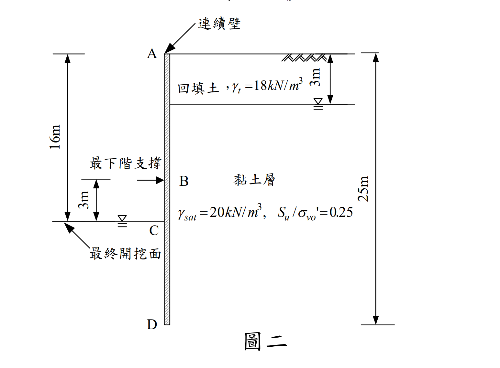

考題編號：SM-2008-3
主分類： SM-U2-3 開挖之穩定性分析
副分類： SM-U1-5 土壤強度特性與變形性
分析法： 總應力法
標籤： 連續壁 貫入深度 安全係數 地盤改良 不排水剪力強度
1. 原始題目重述 (Problem Restatement)
三、某開挖工程於土層中進行，如圖二所示。地表為一厚 3 m 之回填土，單位重 $\gamma_t = 18 \text{ kN/m}^3$。其下方為一黏土層，飽和單位重 $\gamma_{sat} = 20 \text{ kN/m}^3$，正規化不排水剪力強度 $S_u / \sigma_{v0}' = 0.25$，且不排水剪力強度不受開挖解壓之影響。連續壁總深度為 25 m，開挖深度 16 m，最下階支撐位於最終開挖面上方 3 m 處。（25 分）
(一) 試利用側土壓力平衡式計算其貫入深度安全係數 FS。
(二) 為提高其安全係數，擬於被動土壓力側（開挖面內側）進行地盤改良，若改良區土體之平均單位重為 $\gamma_m = 21.5 \text{ kN/m}^3$，試問改良後之平均單壓強度 $q_u$ 應為多少才能使貫入深度的安全係數 FS $\ge$ 1.5。
（註：計算時忽略連續壁之工作彎矩 $M_s$）

圖說：開挖面總深 16m，連續壁總深 25m。最下階支撐位於 13m 處。地表 0~3m 為回填土，地下水位於 3m 處。3m 以下為黏土層。
2. 考題核心精神與出題者意圖 (Core Concepts & Examiner's Intent)
- 總應力法（$\phi=0$）的側土壓力應用：由於土壤為黏土，且為開挖短期的不排水狀況，側向土壓力需採用總應力法計算，公式為 $\sigma_h = \sigma_v \pm 2S_u$。
- SHANSEP 概念（正規化剪力強度）：不排水剪力強度 $S_u$ 隨初始有效覆土應力 $\sigma_{v0}'$ 呈線性遞增，必須釐清 $\sigma_{v0}'$ 是開挖前（未解壓）的原始有效應力。
- 貫入深度安全係數定義：採用自由端支撐法（Free Earth Support Method），以最下階支撐為鉸支承取力矩平衡，安全係數定義為：$FS = \frac{M_R (\text{被動側抵抗力矩})}{M_D (\text{主動側傾覆力矩})}$。
3. 解題戰略地圖與陷阱分析 (Strategic Roadmap & Trap Analysis)
解題策略：
- 建立初始應力與強度剖面：計算出開挖前的有效垂直應力 $\sigma_{v0}'(z)$，進而求出不排水剪力強度 $S_u(z)$ 的分布方程式。
- 計算主動與被動側土壓力分布：以總應力計算，$\sigma_{h,A} = \sigma_{v,A} - 2S_u$ 與 $\sigma_{h,P} = \sigma_{v,P} + 2S_u$。
- 力矩平衡求 FS：分別計算主動與被動土壓力對於最下階支撐點 ($z=13$m) 的力矩，求出 FS。
- 反算地盤改良強度：將被動側土壤單位重替換為 $\gamma_m$，並以未知的 $q_u$ 取代 $2S_u$。在 $FS=1.5$ 的條件下反求 $q_u$。
陷阱分析：
- 陷阱一：誤加水壓力。使用總垂直應力 $\sigma_v$ 計算 $\phi=0$ 的側向土壓力時，計算結果已為「總側向土壓力」（包含了水壓力），不可再額外加上靜水壓力，否則會重複計算。
- 陷阱二：錯用解壓後的應力求 $S_u$。題目明示「不受開挖解壓之影響」，因此被動側的 $S_u$ 必須維持原樣，使用開挖前的 $\sigma_{v0}'$ 計算。
- 陷阱三：單壓強度與剪力強度的換算。地盤改良後的單壓強度為 $q_u$，對應的不排水剪力強度為 $S_{um} = q_u / 2$。在被動土壓力公式中是 $+2S_{um}$，也就是直接加上 $q_u$。
3.5 變數層次分析 (Variable Hierarchy Analysis)
最終目標
求出連續壁貫入深度的安全係數 FS，並反算改良地盤所需的單壓強度 qu
本題關鍵公式（依計算順序）
- 初始有效應力：$\sigma_{v0}' = \sum \gamma H - u$
- 不排水剪力強度：$S_u(z) = 0.25 \cdot \boxed{\sigma_{v0}'(z)}$
- 總應力法主動土壓力：$\sigma_{h,A}(z) = \sigma_{v,A}(z) - 2\boxed{S_u(z)}$
- 總應力法被動土壓力：$\sigma_{h,P}(z) = \sigma_{v,P}(z) + 2\boxed{S_u(z)}$
- 貫入深度安全係數：$FS = \frac{\boxed{M_P}}{\boxed{M_A}}$
L1：題目直接給定
- 符號 | 數值 | 說明
- $\gamma_t$ | 18 kN/m³ | 回填土單位重
- $\gamma_{sat}$ | 20 kN/m³ | 黏土層飽和單位重
- $H$ | 16 m | 開挖深度
- $L$ | 25 m | 連續壁總深度
- $H_s$ | 13 m | 最下階支撐深度 ($16-3$)
- $\gamma_m$ | 21.5 kN/m³ | 改良區土體單位重
L2：需知識點推導
強度參數分布
- 符號 | 公式／來源 | 卡關?
- $\sigma_{v0}'(z)$ | $\gamma_t \cdot 3 + (\gamma_{sat} - \gamma_w)(z - 3)$ |
- $S_u(z)$ | $0.25 \cdot \sigma_{v0}'(z)$ |
土壓力與力矩計算
- 符號 | 公式／來源 | 卡關?
- $\sigma_{v,A}(z)$ | $\gamma_t \cdot 3 + \gamma_{sat} \cdot (z - 3)$ |
- $\sigma_{h,A}(z)$ | $\sigma_{v,A}(z) - 2S_u(z)$ |
- $\sigma_{v,P}(z)$ | $\gamma_{sat} \cdot (z - H)$ |
- $\sigma_{h,P}(z)$ | $\sigma_{v,P}(z) + 2S_u(z)$ |
- $M_A$ | $\int_{H_s}^L \sigma_{h,A}(z) \cdot (z - H_s) dz$ |
- $M_P$ | $\int_H^L \sigma_{h,P}(z) \cdot (z - H_s) dz$ |
L3：深層知識（不懂就卡住）
- 知識點 | 說明 | 卡關?
- 總應力法側土壓力 | $\phi=0$ 時，總側向壓力 $\sigma_h = \sigma_v \pm 2S_u$，若 $\sigma_v$ 為總垂直應力，則算出的 $\sigma_h$ 也是總側向應力，不需再加水壓力。 |
- 貫入深度安全係數 | 根據自由端支撐法，以最下階支撐為支點，計算其下方主動側與被動側土壓力所產生的力矩比值。 |
- 單壓強度換算 | $S_u = q_u / 2$。 |
4. 步驟化詳細計算過程 (Step-by-Step Detailed Calculation)
基本假設：計算過程採用水單位重 $\gamma_w = 9.81 \text{ kN/m}^3$。（若採用 10 kN/m³，數值會略有差異，但不影響解題邏輯）
(一) 計算貫入深度安全係數 FS
Step 1：建立不排水剪力強度 $S_u(z)$ 之深度函數
開挖前，地下水位於深度 3 m 處，因此有效覆土應力 $\sigma_{v0}'(z)$（$z \ge 3$ m）為：
$$ \sigma_{v0}'(z) = 18 \times 3 + (20 - 9.81) \times (z - 3) = 54 + 10.19(z - 3) = 10.19z + 23.43 \text{ (kPa)} $$
根據題目，不排水剪力強度分布為：
$$ S_u(z) = 0.25 \cdot \sigma_{v0}'(z) = 0.25[10.19z + 23.43] = 2.5475z + 5.8575 \text{ (kPa)} $$
Step 2：計算主動側土壓力與傾覆力矩 $M_A$
主動側總垂直應力 $\sigma_{v,A}(z)$：
$$ \sigma_{v,A}(z) = 18 \times 3 + 20(z - 3) = 20z - 6 \text{ (kPa)} $$
主動側總土壓力（$\phi=0$ 分析，不需額外加水壓）：
$$ \sigma_{h,A}(z) = \sigma_{v,A}(z) - 2S_u(z) = (20z - 6) - 2(2.5475z + 5.8575) = 14.905z - 17.715 \text{ (kPa)} $$
連續壁最下階支撐位於 $z = 16 - 3 = 13$ m。僅考慮支撐以下（$z = 13$ m ~ $25$ m）之土壓力：
- 在 $z = 13$ m，$\sigma_{h,A}(13) = 14.905(13) - 17.715 = 176.05 \text{ kPa}$
- 在 $z = 25$ m，$\sigma_{h,A}(25) = 14.905(25) - 17.715 = 354.91 \text{ kPa}$
主動側合力 $F_A$：
$$ F_A = \frac{1}{2} (176.05 + 354.91) \times (25 - 13) = \frac{1}{2} (530.96) \times 12 = 3185.76 \text{ kN/m} $$
$F_A$ 作用點距離 $z=13$ m 之力臂 $y_A$：
$$ y_A = \frac{12}{3} \times \frac{2(354.91) + 176.05}{176.05 + 354.91} = 4 \times \frac{885.87}{530.96} = 6.6737 \text{ m} $$
傾覆力矩 $M_A$：
$$ M_A = 3185.76 \times 6.6737 = 21260.9 \text{ kN-m/m} $$
Step 3：計算被動側土壓力與抵抗力矩 $M_P$
被動側總垂直應力 $\sigma_{v,P}(z)$（從開挖面 $z=16$ m 起算）：
$$ \sigma_{v,P}(z) = 20(z - 16) \text{ (kPa)} $$
被動側總土壓力（$S_u$ 不受解壓影響，套用 Step 1 原式）：
$$ \sigma_{h,P}(z) = \sigma_{v,P}(z) + 2S_u(z) = 20(z - 16) + 2(2.5475z + 5.8575) = 25.095z - 308.285 \text{ (kPa)} $$
計算被動側分布（$z = 16$ m ~ $25$ m）：
- 在 $z = 16$ m，$\sigma_{h,P}(16) = 25.095(16) - 308.285 = 93.235 \text{ kPa}$
- 在 $z = 25$ m，$\sigma_{h,P}(25) = 25.095(25) - 308.285 = 319.09 \text{ kPa}$
被動側合力 $F_P$：
$$ F_P = \frac{1}{2} (93.235 + 319.09) \times (25 - 16) = \frac{1}{2} (412.325) \times 9 = 1855.46 \text{ kN/m} $$
$F_P$ 作用點距離開挖面 ($z=16$) 之深度 $y_P'$：
$$ y_P' = \frac{9}{3} \times \frac{2(319.09) + 93.235}{93.235 + 319.09} = 3 \times \frac{731.415}{412.325} = 5.3216 \text{ m} $$
距離最下階支撐 ($z=13$) 之力臂 $y_P$：
$$ y_P = (16 - 13) + y_P' = 3 + 5.3216 = 8.3216 \text{ m} $$
抵抗力矩 $M_P$：
$$ M_P = 1855.46 \times 8.3216 = 15440.4 \text{ kN-m/m} $$
Step 4：計算安全係數 FS
$$ FS = \frac{M_P}{M_A} = \frac{15440.4}{21260.9} = 0.726 $$
$$ \boxed{FS = 0.73} $$
(二) 求地盤改良後所需之單壓強度 $q_u$
為了使 $FS \ge 1.5$，被動側抵抗力矩 $M_P$ 必須滿足：
$$ M_P \ge 1.5 \times M_A = 1.5 \times 21260.9 = 31891.4 \text{ kN-m/m} $$
改良區單位重 $\gamma_m = 21.5 \text{ kN/m}^3$，未知剪力強度為 $S_{um} = q_u / 2$。
被動側總土壓力變為：
$$ \sigma_{h,P}(z) = \sigma_{v,P}(z) + 2S_{um} = 21.5(z - 16) + q_u $$
計算分布：
- 在 $z = 16$ m，$\sigma_{h,P}(16) = q_u$
- 在 $z = 25$ m，$\sigma_{h,P}(25) = 21.5(9) + q_u = 193.5 + q_u$
為方便計算力矩，將土壓力分為矩形與三角形：
- 矩形部分（寬度 $q_u$，高度 9 m）：
- 力 $F_{P1} = 9 q_u$
- 作用點距 $z=13$ 的力臂：$3 + 4.5 = 7.5$ m
- 力矩 $M_{P1} = 9 q_u \times 7.5 = 67.5 q_u$ - 三角形部分（頂部 0，底部 193.5，高度 9 m）：
- 力 $F_{P2} = \frac{1}{2} \times 193.5 \times 9 = 870.75 \text{ kN/m}$
- 作用點距 $z=13$ 的力臂：$3 + \frac{2}{3}(9) = 9$ m
- 力矩 $M_{P2} = 870.75 \times 9 = 7836.75$
總抵抗力矩 $M_P = 67.5 q_u + 7836.75$。
令 $M_P = 31891.4$：
$$ 67.5 q_u + 7836.75 = 31891.4 $$
$$ 67.5 q_u = 24054.65 $$
$$ q_u = 356.36 \text{ kPa} $$
$$ \boxed{q_u \ge 356.36 \text{ kPa}} $$
（註：若採用 $\gamma_w=10 \text{ kN/m}^3$，則 $M_A = 21384$，對應解得 $q_u \ge 359.1 \text{ kPa}$，兩者皆為合理答案）
5. 關鍵爭議點與進階探討 (Critical Issues & Advanced Discussion)
- 總應力與有效應力的抉擇：本題明示 $S_u/\sigma_{v0}'=0.25$，代表屬於黏土的短期不排水開挖，必須使用總應力法。許多考生容易誤將 $\sigma_h = (\sigma_v - u) + \dots$ 拆開算，忘記在 $\phi=0$ 條件下，總側向土壓力可以直接以 $\sigma_v \pm 2S_u$ 求得，無須另外加算水壓力。
- 解壓對強度的影響：深開挖時，被動側土壤因上方解壓，有效覆土應力會大幅降低，理應導致 $S_u$ 下降。但題目特別註明「不受開挖解壓之影響」，這是一項簡化假設，提醒考生不需重新計算開挖後的 $\sigma_{v0}'$ 來調整 $S_u$。在實務上，開挖後的解壓軟化（Stress Relief Softening）是必須考量的，設計時通常會對被動側的強度進行折減。